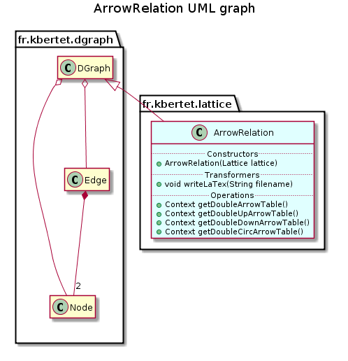

public class ArrowRelation extends DGraph
The ArrowRelation class encodes arrow relation between meet & join-irreductibles of a lattice.
Let m and b be respectively meet and join irreductibles of a lattice. Recall that m has a unique successor say m+ and j has a unique predecessor say j-, then :

| Constructor and Description |
|---|
ArrowRelation(Lattice lattice)
Unique constructor of this component from a lattice.
|
| Modifier and Type | Method and Description |
|---|---|
Context |
getDoubleArrowTable()
Returns the table of the lattice, composed of the join and meet irreducibles nodes.
|
Context |
getDoubleCircArrowTable()
Returns the table of the lattice, composed of the join and meet irreducibles nodes.
|
Context |
getDoubleDownArrowTable()
Returns the table of the lattice, composed of the join and meet irreducibles nodes.
|
Context |
getDoubleUpArrowTable()
Returns the table of the lattice, composed of the join and meet irreducibles nodes.
|
boolean |
isCirc(Edge e)
Returns true if and only if there is an circ arrow between from and to of edge e.
|
boolean |
isCross(Edge e)
Returns true if and only if there is an cross arrow between from and to of edge e.
|
boolean |
isDown(Edge e)
Returns true if and only if there is an down arrow between from and to of edge e.
|
boolean |
isUp(Edge e)
Returns true if and only if there is an up arrow between from and to of edge e.
|
boolean |
isUpDown(Edge e)
Returns true if and only if there is an up-down arrow between from and to of edge e.
|
void |
save(String filename)
Save the description of this component in a file whose name is specified.
|
addEdge, addEdge, addEdge, addNode, clone, complementary, containsEdge, containsEdge, containsNode, getEdge, getEdges, getNode, getNodeByContent, getNodeByIdentifier, getNodes, getPredecessorEdges, getPredecessorNodes, getPredecessors, getSinks, getStronglyConnectedComponent, getSubgraphByEdges, getSubgraphByNodes, getSuccessorEdges, getSuccessorNodes, getSuccessors, getWells, isAcyclic, random, random, reflexiveClosure, reflexiveReduction, removeEdge, removeEdge, removeNode, removeNodes, setNodes, setPredecessors, setSuccessors, sizeEdges, sizeNodes, topologicalSort, toString, transitiveClosure, transposepublic ArrowRelation(Lattice lattice)
Unique constructor of this component from a lattice.
Nodes are join or meet irreductibles of the lattice. Edges content encodes arrows as String “Up”, “Down”, “UpDown”, “Cross”, “Circ”.
lattice - Lattice from which this component is deduced.public void save(String filename) throws IOException
Save the description of this component in a file whose name is specified.
save in class DGraphfilename - the name of the fileIOException - When an IOException occurspublic Context getDoubleArrowTable()
Returns the table of the lattice, composed of the join and meet irreducibles nodes.
Each attribute of the table is a copy of a join irreducibles node. Each observation of the table is a copy of a meet irreducibles node. An attribute is extent of an observation when its join irreducible node is in double arrow relation with the meet irreducible node in the lattice.
public Context getDoubleDownArrowTable()
Returns the table of the lattice, composed of the join and meet irreducibles nodes.
Each attribute of the table is a copy of a join irreducibles node. Each observation of the table is a copy of a meet irreducibles node. An attribute is extent of an observation when its join irreducible node is in down arrow relation with the meet irreducible node in the lattice.
public Context getDoubleUpArrowTable()
Returns the table of the lattice, composed of the join and meet irreducibles nodes.
Each attribute of the table is a copy of a join irreducibles node. Each observation of the table is a copy of a meet irreducibles node. An attribute is extent of an observation when its join irreducible node is in up arrow relation with the meet irreducible node in the lattice.
public Context getDoubleCircArrowTable()
Returns the table of the lattice, composed of the join and meet irreducibles nodes.
Each attribute of the table is a copy of a join irreducibles node. Each observation of the table is a copy of a meet irreducibles node. An attribute is extent of an observation when its join irreducible node is in double arrow relation or circ relation with the meet irreducible node in the lattice.
public boolean isUp(Edge e)
Returns true if and only if there is an up arrow between from and to of edge e.
e - edge to be testedpublic boolean isDown(Edge e)
Returns true if and only if there is an down arrow between from and to of edge e.
e - edge to be testedpublic boolean isUpDown(Edge e)
Returns true if and only if there is an up-down arrow between from and to of edge e.
e - edge to be testedpublic boolean isCross(Edge e)
Returns true if and only if there is an cross arrow between from and to of edge e.
e - edge to be testedpublic boolean isCirc(Edge e)
Returns true if and only if there is an circ arrow between from and to of edge e.
e - edge to be testedCopyright © 2010–2014 Karell Bertet. All rights reserved.